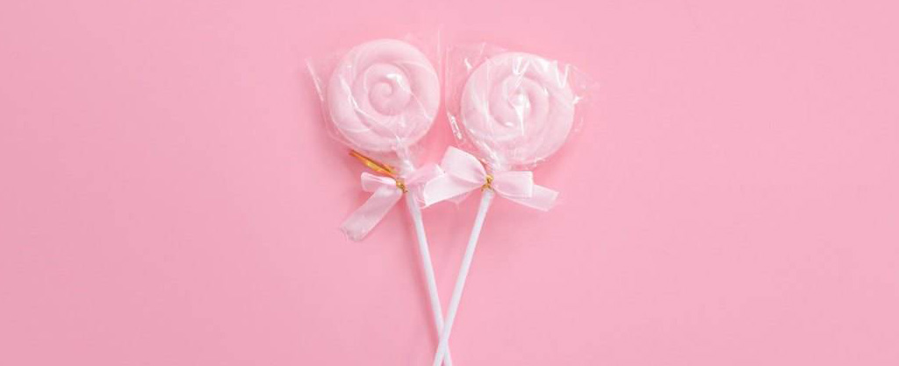
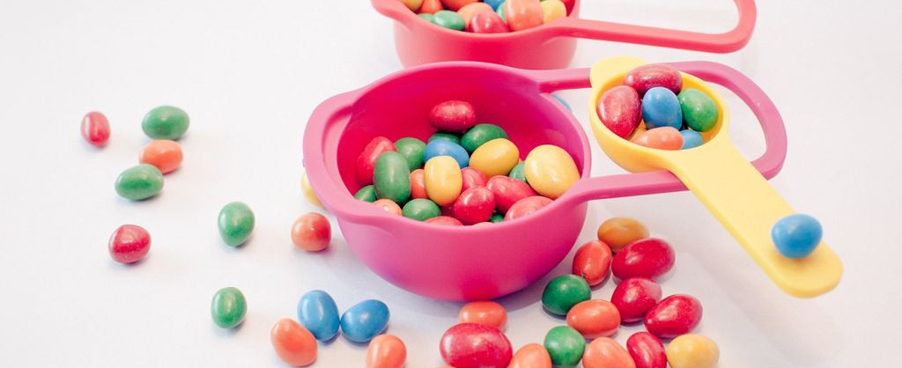
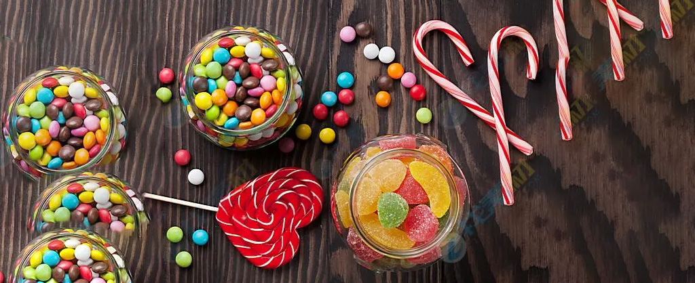
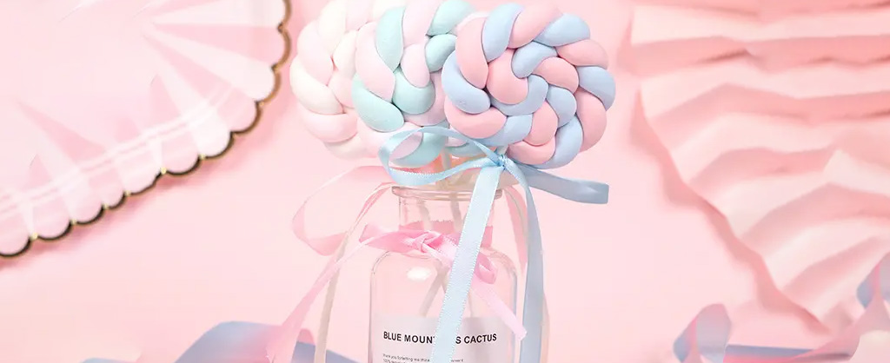
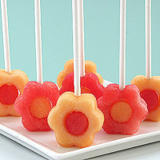
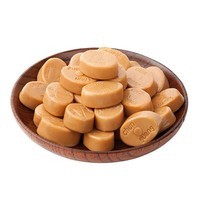
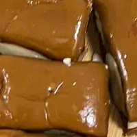

不同糖果的性格代表
- 薄荷巧克力：生活情趣
- 酒心巧克力：情场高手
- 牛奶巧克力：小白兔
男生送女生糖果有什么含义？
- 绿色糖果代表爱情
- 紫色糖果代表神秘、魅力
- 粉色糖果代表浪漫、自由
送给你棉花糖什么意思?
- 这个棉花糖如果单指人，说明这个人不
- 怎么样，如果加入感情的话，应该就转
- 化为甜蜜的意思了，就像歌曲里的那样
糖果推荐
-

棒棒糖
是由西班牙糖果上恩里克所发明的
在糖果中插入小棍使糖果可以手拿
棒棒糖是儿童最喜欢的糖果之一
世界各地的糖果厂家都有生产
-

椰子糖
椰子糖采用海南岛的新鲜椰子原糖、汁
麦芽白砂糖、可可粉、牛奶、经过特别的
科学方法精制而成，口味纯正，它不仅
保留了椰子的原味，味道香甜可口
-

太妃糖
是一种西式糖果，用红糖或糖蜜和奶油做
成的硬而难嚼的糖果，制作方法糖蜜红
糖煮至非常浓稠，然后搅拌这种物质，直
到糖块有光泽并能保持固态形状时为止
@甜心糖果
svtcc.students